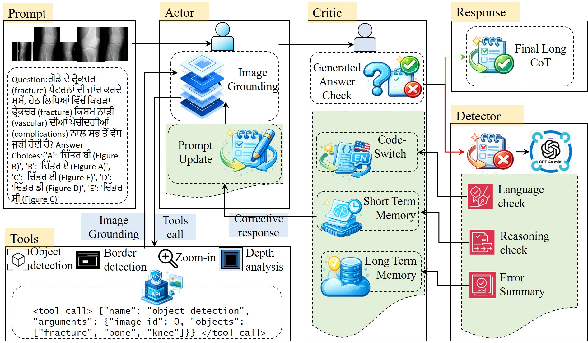
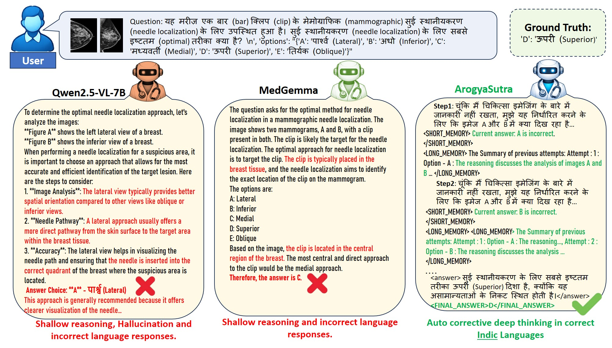

An actor–critic system combining tool-based visual grounding and dual-memory mechanisms for step-wise, error-aware clinical reasoning across 7 Indian languages.

Multimodal Large Language Models (MLLMs) have shown promising capabilities in general domains, yet their performance remains limited in specialized healthcare settings — particularly for multilingual and low-resource scenarios. In regions like rural India, patients express complex medical queries in native Indic languages and rely on multimodal inputs such as medical images. Existing MLLMs, predominantly trained on English-centric data, fail to serve these communities.
We introduce ArogyaBodha, a large-scale multilingual multimodal medical QA dataset of 40,857 expert-verified samples from 8 heterogeneous sources, covering 31 body systems, 6 imaging modalities, and 21 clinical domains across English and 7 major Indian languages. We further propose ArogyaSutra, an actor–critic multi-agent framework combining tool-based visual grounding with dual-memory mechanisms for step-wise, error-aware decision making. Experiments demonstrate consistent improvements over strong baselines across all evaluated Indic languages.
This work makes four key contributions to multilingual medical AI and low-resource NLP.
40,857 samples across English + 7 Indic languages, curated from 8 medical sources with expert verification and COMET-QA quality control.
An actor–critic multi-agent system with tool-grounded visual reasoning, code-switching, and dual short/long-term memory for iterative correction.
An automated rollout pipeline generating critic-refined supervision traces (ArogyaBodha_ActCri) for distilling reasoning into a single inference model.
arogyasutraV1E3.5 — Qwen2.5-VL-7B distilled from actor–critic rollouts, achieving 43.40% avg and 50.4% OOD accuracy.
Both the Actor and Critic share the Qwen2.5-VL-7B backbone but differ in role. The Actor generates step-wise reasoning augmented by vision tools; the Critic evaluates correctness and triggers targeted feedback. After training, only the distilled Actor is used at inference — no Critic needed.
Processes the medical image and Indic-language query, invoking four vision tools (object detection, zoom/crop, edge detection, depth estimation) to extract clinically relevant evidence before generating step-by-step reasoning.
Scores the Actor's output (ŝ ∈ [0,1]). If correct, outputs the final long CoT answer. If incorrect, an error detector (GPT-4o-mini) classifies the failure as a language error or a reasoning error.
If the failure stems from linguistic instability (repetition, incomplete output), the Critic provides corrective feedback in English to stabilize the Actor's generation.
If the failure is logical, feedback is issued in the original Indic language, drawing on short-term memory (most recent error) and long-term memory (summarized error history) to prevent repeated mistakes.
Critic-approved traces are distilled into the Actor via supervised fine-tuning. At inference, the Actor predicts directly from state + memory, eliminating Critic overhead entirely.
Zero-shot evaluation on 130 samples per language (910 total). Metric: choice accuracy. ArogyaSutra (7B) surpasses GPT-4.0 by +4.1 pts and its own base model by +9.2 pts.
| Model | AS | BN | HI | MR | PB | TA | TE | Avg |
|---|---|---|---|---|---|---|---|---|
| GPT-4.0 | 38.40 | 44.60 | 40.10 | 37.80 | 39.20 | 36.90 | 39.10 | 39.30 |
| Mistral-Small-3.2-24B | 40.90 | 42.90 | 44.10 | 43.20 | 40.90 | 41.40 | 42.50 | 42.27 |
| MedGemma-4B-it | 38.50 | 35.10 | 37.40 | 34.50 | 35.70 | 36.70 | 34.90 | 36.11 |
| MedVLM-R1 | 23.50 | 22.80 | 25.60 | 22.80 | 24.20 | 25.40 | 22.20 | 23.79 |
| Qwen2.5-VL-7B (base) | 32.30 | 36.50 | 33.84 | 36.12 | 32.30 | 35.38 | 33.07 | 34.21 |
| ArogyaSutra (7B) | 47.69 | 45.38 | 42.30 | 42.30 | 43.07 | 41.53 | 41.53 | 43.40 |
AS = Assamese · BN = Bengali · HI = Hindi · MR = Marathi · PB = Punjabi · TA = Tamil · TE = Telugu
Evaluated on 100 private real-world clinical queries collected by practicing physicians. ArogyaSutra achieves the highest accuracy, demonstrating strong generalization under distribution shift.
| Model | OOD Accuracy |
|---|---|
| Qwen2.5-VL-7B (base) | 35.0 |
| MedGemma-4B-it | 45.2 |
| ArogyaSutra (7B) | 50.4 |
Removing image grounding or code-switching causes the steepest accuracy drops (−16.5 pts each). Memory alone improves over no-memory by +3.7 pts but reaches peak performance only when combined with grounding.
| Full ArogyaSutra | 43.40 |
| w/o Critic & Image Grounding | 33.43 |
| w/o Critic | 33.71 |
| w/o Image Grounding | 26.86 |
| w/o Code-switching | 26.86 |
| Grounding | Memory | Avg |
|---|---|---|
| ✗ | ✓ | 26.86 |
| ✓ | ✗ | 30.57 |
| ✓ | ✓ | 43.40 |
ArogyaSutra consistently generates responses in the target Indic language and demonstrates more structured and corrective reasoning compared to baselines. Leveraging the actor–critic framework, the model identifies and revises incorrect intermediate conclusions, progressively eliminating implausible hypotheses — highlighting its effectiveness in improving multilingual alignment and reasoning fidelity.

Qualitative comparison of ArogyaSutra against MedGemma-4B-it and Qwen2.5-VL-7B-Instruct baselines. Correct clinical tokens are highlighted in green; incorrect or adversarially altered tokens in red.
@inproceedings{halder2026arogyasutra,
title = {ArogyaSutra: A Multi-Agent Framework for
Multimodal Medical Reasoning in Indic Languages},
author = {Halder, Tanmoy Kanti and Ghosh, Akash and
Baidya, Subhadip and Roy, Arijit and Saha, Sriparna},
booktitle = {Proceedings of the Thirty-Fifth International Joint
Conference on Artificial Intelligence (IJCAI)},
year = {2026},
url = {https://github.com/IITP-CSE/ArogyaSutra}
}